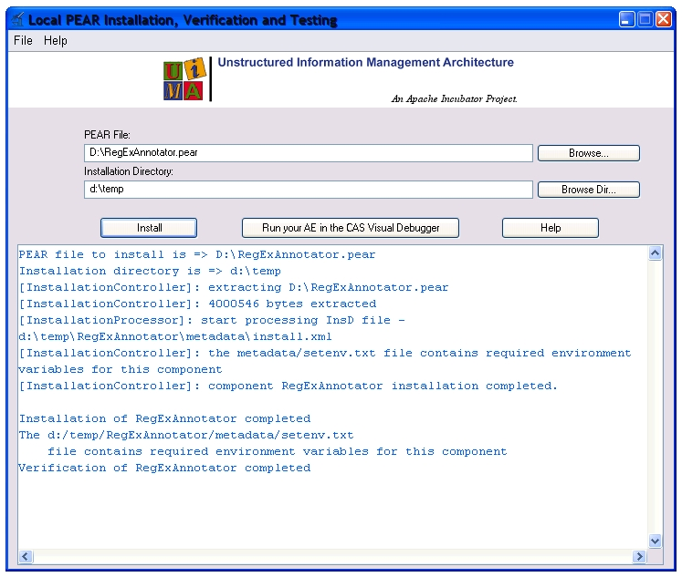

Before a component that is packaged as PEAR can be used in a UIMA application, the PEAR package
must be installed on the target system. During the installation, the package content is extracted
and the internal PEAR settings (PEAR macros) are updated with the actual install information.
This also means that an installed PEAR package cannot be moved to
another directory without internal changes. By default the PEAR packages are not installed directly
to the specified installation directory. For each PEAR a subdirectory with the name of the PEAR's ID
is created where the PEAR package is installed. If the PEAR installation directory already exists,
the old content is automatically deleted before the new content is installed.
During installation, a setenv.txt file containing the PEAR settings is generated in the
metadata subdirectory of the install directory.
Go there too check the most important PEAR settings (classpath, datapath, ...), or to read in
the settings programmatically.
After the PEAR file is installed, the installed package is automatically verified using a separate
verification step. The verification checks if the installed PEAR package is runnable inside UIMA.
Another imported point during the PEAR installation is the generation of the PEAR package descriptor. The
PEAR package descriptor is a special UIMA descriptor that can be used to run installed PEAR packages in every
UIMA application out of the box. For details about the PEAR descriptor, please refer to the
UIMA documentation at
PEAR package descriptor.
To install a PEAR package you have two options:
-
PEAR Installer UI
The PEAR Installer UI is a standalone Swing application to install PEAR packages.
After the PEAR package and the install directory is selected, the installation is
performed and the installation and verification results are displayed. Out of the tool
it is directly possible to test the installed PEAR package using the Cas Visual Debugger (CVD).
For more details about the PEAR Installer, please refer to the UIMA documentation at
PEAR Installer User's Guide.

-
PEAR API
The PEAR API should be used if you want to integrate the PEAR installation
with a custom application. With the PEAR API it is possible to install PEAR packages
to a given installation directory and to optionally verify the installed packages.
Details about the PEAR API are available in the UIMA documentation at
Installing a PEAR file using the PEAR APIs.


 Getting Started: Working With PEARs
Getting Started: Working With PEARs